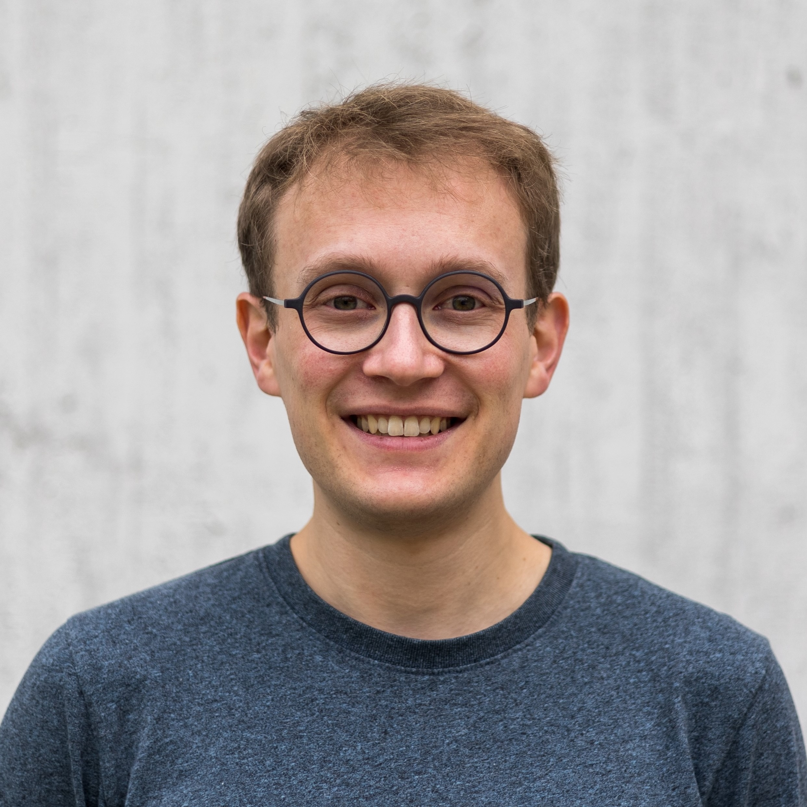
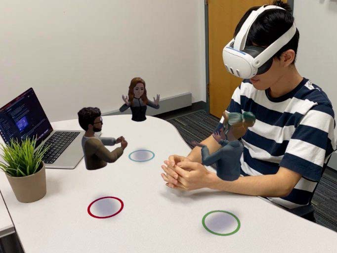
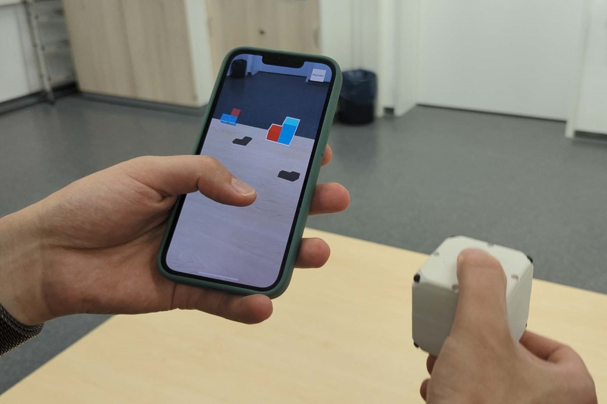
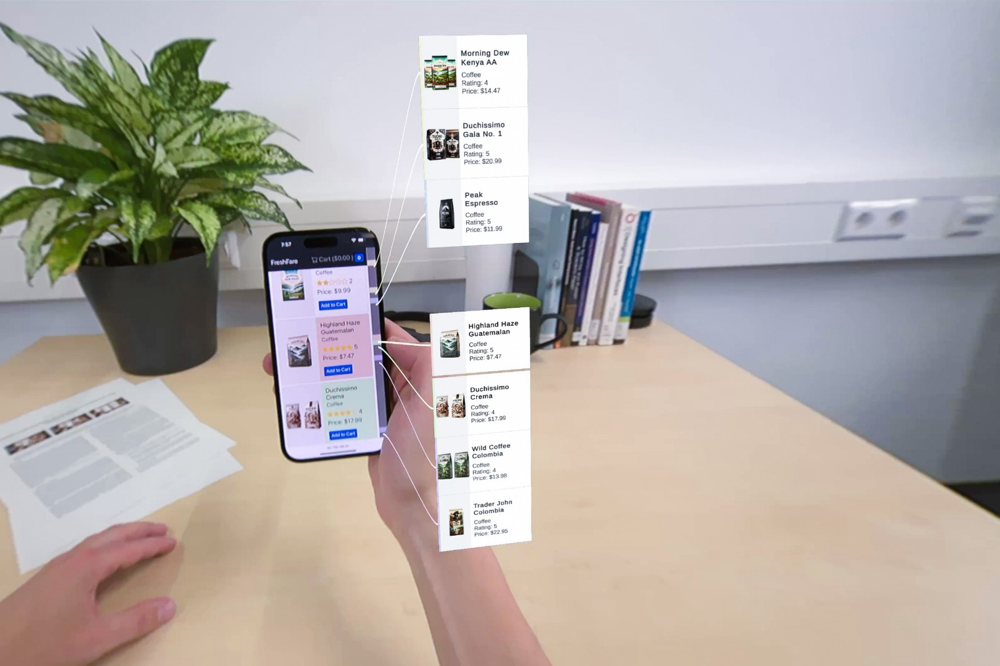
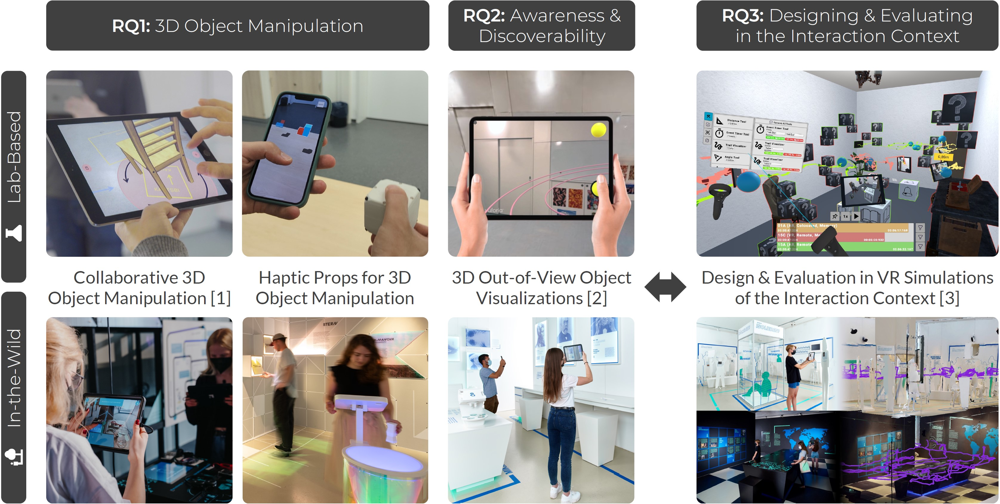
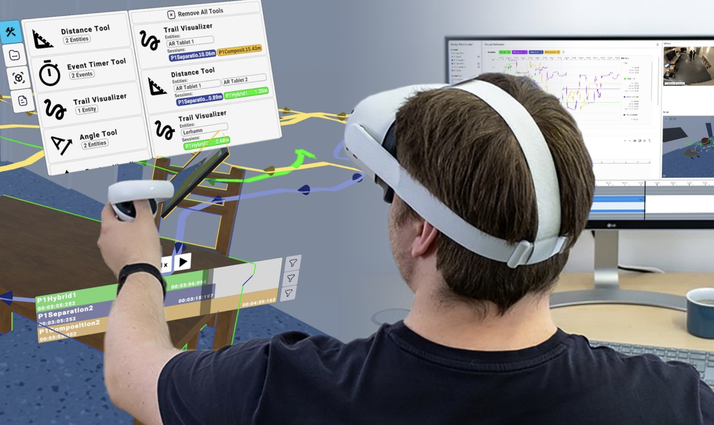
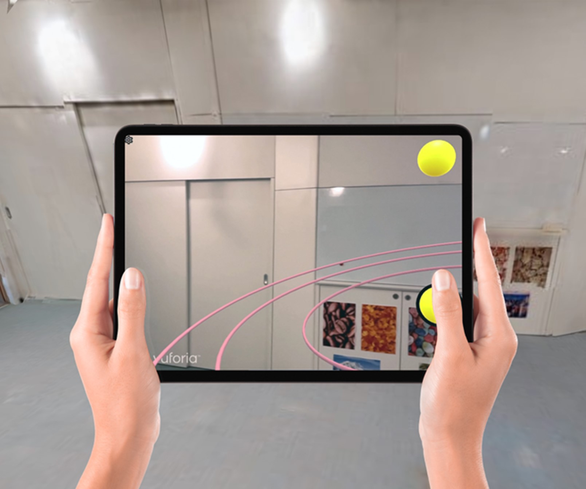
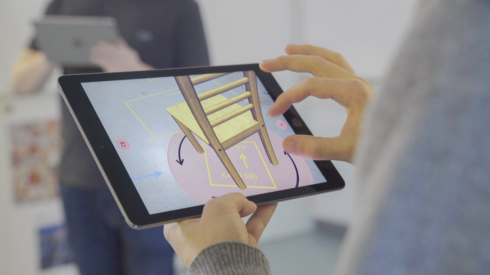

Jonathan Wieland
Research Assistant and PhD Candidate
HCI Group, University of Konstanz
About Me
I am a research assistant and PhD candidate in the Human-Computer Interaction Group at the University of Konstanz, led by Prof. Harald Reiterer. As part of the SFB-TRR 161 Project C01 (Evaluating Mixed Reality Experiences) my research interests include exploring the potential and challenges of mixed reality-supported interactive exhibitions. From October 2023 to April 2024, I was a visiting researcher in the Augmented Perception Lab at Carnegie Mellon University in Pittsburgh, PA, USA. Read more about my stay here.
Selected Publications

MiniMates: Miniature Avatars for AR Remote Meetings within Limited Physical Spaces
CHI 2025
DOI

Investigating the Potential of Haptic Props for 3D Object Manipulation in Handheld AR
IEEE TVCG
DOI

Push2AR: Enhancing Mobile List Interactions Using Augmented Reality
IEEE ISMAR 2024
DOI

Designing and Evaluating Interactions for Handheld AR
ISS 2023 Doctoral Symposium
DOI

ReLive: Bridging In-Situ and Ex-Situ Visual Analytics for Analyzing Mixed Reality User
Studies
CHI 2022
DOI

Arrow, Bézier Curve, or Halos? – Comparing 3D Out-of-View Object Visualization Techniques for Handheld Augmented Reality
ISMAR 2022
DOI

Separation, Composition, or Hybrid? – Comparing Collaborative 3D Object Manipulation Techniques for Handheld Augmented Reality
ISMAR 2021
DOI
Academic Service
- Reviewer for premier HCI venues including CHI, ISMAR, ISS, and CHI PLAY
- LBW AC for CHI 2025
- LBW AC for CHI 2024
Awards
- 2024: ADC Talent Award 2024 - Bronze for exhibition "YOUTOPIA"
- 2023: CommAwards - Silver for exhibition "YOUTOPIA"
- 2022: ADC Talent Award - Gold for exhibition "Stayin' Alive"
- 2022: Red Dot Winner - Brands & Communication Design for exhibition "Stayin' Alive"
- 2021: CommAwards - Gold for exhibition "Stayin' Alive"
- 2018: Adobe Government Creativity Award for exhibition "Rebuild Palmyra?"
- 2018: ADC Talent Award - Silver for exhibition "Rebuild Palmyra?"